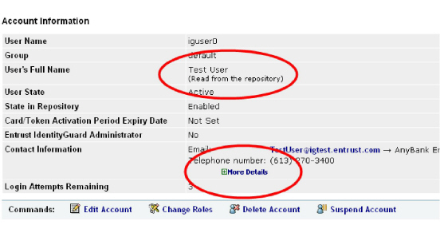

|
IdentityGuard Server 12.0 Administration Guide |
|
IdentityGuard Server 12.0 Administration Guide |
If you have an OTP delivery method configured for sending one-time passwords using email, you can contact users directly (for any administrative communication) from their account record.
To view user account and contact the user
1. Log in to the Administration interface (Logging in and out of the Administration interface).
2. In the main menu, click User Accounts.
The User Accounts page appears.
3. Find a specific user in one of two ways:
● use the Go To Account tab (see To search for information about one user)
● use the Find Accounts tab (see To search for information about one or more users)
4. The View Account page appears.
Note: A More Details link means that the contact information was mapped from your LDAP user repository. Clicking the link allows you to see details of the mapping and possible subsequent changes to the data.

5. Click the user’s email address.
6. An email window appears.
7. Compose and send your email.